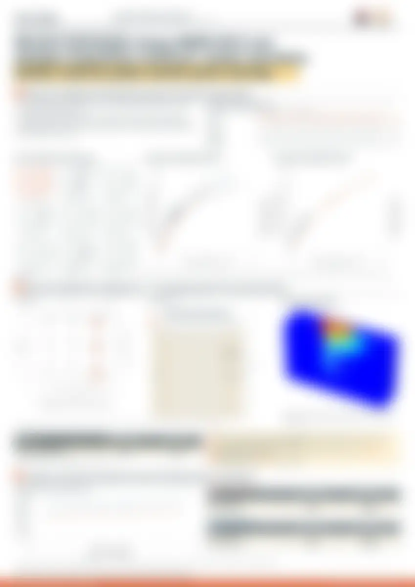

Kelompok tiang HDPE penahan beban lateral
Merancang kelompok tiang dari tiga batang HDPE pejal untuk menahan beban lateral sebesar mungkin di pasir kering, lalu menguji model fisiknya di babak final.
- Acara atau tempat
- Indonesian Geotechnical Challenge (IGC) 2026, HATTI
- Tahun
- 2026
- Peran saya
- Anggota tim HIMATESI UNJA (3 orang).
- Hasil
- Juara 2; peringkat 1 dari 5 finalis di tahap pertama
- Perangkat lunak
- PLAXIS 3D, AllPile, Microsoft Excel, Python
- Jenis
- Lomba, Perhitungan, Pemodelan
Masalah
Bahan yang diberikan panitia hanya tiga batang HDPE pejal Ø12 mm sepanjang 900 mm. Batang boleh dipotong menjadi tiang 150–300 mm, jarak antartiang 2D–4D, dan pilecap berukuran 180 × 132 mm. Tujuannya beban lateral puncak sebesar mungkin, diuji dengan kendali perpindahan di Pertemuan Ilmiah Tahunan HATTI XXX, Jakarta, 2–4 November 2026.
1. Sembilan skenario susunan tiang
Tiga batang HDPE 900 mm dipotong menjadi 9 sampai 15 tiang. Makin banyak tiang, makin pendek tiap tiang (247 mm untuk 9 tiang, 126 mm untuk 15 tiang). Setiap skenario dianalisis dengan metode p-y untuk kepala tiang jepit dan bebas.
Beban dari kiri. Le = panjang tiang tertanam. Bingkai tebal = desain terpilih K01.
2. Kapasitas K01 dan sensitivitas sudut geser
Kapasitas lateral K01 cukup stabil terhadap variasi φ karena sebagian besar dibatasi momen plastis tiang.
- Kepala jepit
- Kepala bebas
Lihat data
| Seri | Sudut geser φ (°) | Kapasitas lateral (N) |
|---|---|---|
| Kepala jepit | 30 | 251,99 |
| Kepala jepit | 33,65 | 273,33 |
| Kepala jepit | 38,15 | 300 |
| Kepala bebas | 30 | 168,75 |
| Kepala bebas | 33,65 | 193,21 |
| Kepala bebas | 38,15 | 211,99 |
3. Pemodelan PLAXIS 3D: K01 dibanding K06
Model setengah (bidang simetri) dengan tiang HDPE dan pilecap dibandingkan untuk dua kandidat terkuat. Pada perpindahan yang sama, K01 (9 tiang panjang) menahan beban jauh lebih besar daripada K06 (12 tiang pendek): pada 42,45 mm, 153,1 N dibanding 81,0 N.
- K01 (3 × 3, 9 tiang)
- K06 (6 × 2, 12 tiang)
Data K06 diambil dari langkah yang tersimpan di Output PLAXIS, mulai perpindahan 10 mm.
Lihat data
| Seri | Perpindahan garis beban (mm) | Beban lateral kelompok (N) |
|---|---|---|
| K01 (3 × 3, 9 tiang) | 0 | 0 |
| K01 (3 × 3, 9 tiang) | 0,84 | 40,80 |
| K01 (3 × 3, 9 tiang) | 2,21 | 66,60 |
| K01 (3 × 3, 9 tiang) | 3,64 | 80,70 |
| K01 (3 × 3, 9 tiang) | 5,23 | 88,50 |
| K01 (3 × 3, 9 tiang) | 7,04 | 94,20 |
| K01 (3 × 3, 9 tiang) | 8,96 | 99,30 |
| K01 (3 × 3, 9 tiang) | 10,12 | 101,80 |
| K01 (3 × 3, 9 tiang) | 11,90 | 106,10 |
| K01 (3 × 3, 9 tiang) | 13,51 | 109,50 |
| K01 (3 × 3, 9 tiang) | 14,68 | 111,80 |
| K01 (3 × 3, 9 tiang) | 15,92 | 114,20 |
| K01 (3 × 3, 9 tiang) | 17,03 | 116,30 |
| K01 (3 × 3, 9 tiang) | 18,22 | 118,60 |
| K01 (3 × 3, 9 tiang) | 19,48 | 120,80 |
| K01 (3 × 3, 9 tiang) | 20,74 | 123,20 |
| K01 (3 × 3, 9 tiang) | 21,94 | 125,60 |
| K01 (3 × 3, 9 tiang) | 23,19 | 128 |
| K01 (3 × 3, 9 tiang) | 24,34 | 130 |
| K01 (3 × 3, 9 tiang) | 25,43 | 132,20 |
| K01 (3 × 3, 9 tiang) | 26,49 | 133,80 |
| K01 (3 × 3, 9 tiang) | 27,54 | 135,60 |
| K01 (3 × 3, 9 tiang) | 28,61 | 137,30 |
| K01 (3 × 3, 9 tiang) | 29,67 | 138,70 |
| K01 (3 × 3, 9 tiang) | 30,74 | 140,40 |
| K01 (3 × 3, 9 tiang) | 31,81 | 141,70 |
| K01 (3 × 3, 9 tiang) | 32,88 | 143,40 |
| K01 (3 × 3, 9 tiang) | 33,95 | 144,50 |
| K01 (3 × 3, 9 tiang) | 35,03 | 146 |
| K01 (3 × 3, 9 tiang) | 36,11 | 147,10 |
| K01 (3 × 3, 9 tiang) | 37,20 | 148,30 |
| K01 (3 × 3, 9 tiang) | 38,28 | 149,60 |
| K01 (3 × 3, 9 tiang) | 39,36 | 150,40 |
| K01 (3 × 3, 9 tiang) | 40,45 | 151,50 |
| K01 (3 × 3, 9 tiang) | 41,54 | 152,20 |
| K01 (3 × 3, 9 tiang) | 42,62 | 153,30 |
| K01 (3 × 3, 9 tiang) | 43,71 | 153,90 |
| K01 (3 × 3, 9 tiang) | 44,80 | 154,80 |
| K01 (3 × 3, 9 tiang) | 45,89 | 155,30 |
| K01 (3 × 3, 9 tiang) | 46,98 | 156,10 |
| K01 (3 × 3, 9 tiang) | 48 | 156,50 |
| K06 (6 × 2, 12 tiang) | 10 | 75,60 |
| K06 (6 × 2, 12 tiang) | 10,12 | 75,50 |
| K06 (6 × 2, 12 tiang) | 10,44 | 75,80 |
| K06 (6 × 2, 12 tiang) | 11,44 | 76,30 |
| K06 (6 × 2, 12 tiang) | 12,11 | 76,60 |
| K06 (6 × 2, 12 tiang) | 12,77 | 76,90 |
| K06 (6 × 2, 12 tiang) | 13,44 | 77,10 |
| K06 (6 × 2, 12 tiang) | 14,10 | 77,30 |
| K06 (6 × 2, 12 tiang) | 14,77 | 77,50 |
| K06 (6 × 2, 12 tiang) | 15,10 | 77,60 |
| K06 (6 × 2, 12 tiang) | 15,76 | 77,80 |
| K06 (6 × 2, 12 tiang) | 16,09 | 77,90 |
| K06 (6 × 2, 12 tiang) | 19,74 | 78,60 |
| K06 (6 × 2, 12 tiang) | 23,06 | 79,20 |
| K06 (6 × 2, 12 tiang) | 26,37 | 79,60 |
| K06 (6 × 2, 12 tiang) | 29,68 | 79,90 |
| K06 (6 × 2, 12 tiang) | 33 | 80,20 |
| K06 (6 × 2, 12 tiang) | 36,31 | 80,50 |
| K06 (6 × 2, 12 tiang) | 42,45 | 81 |
4. Prediksi dibanding hasil uji
Uji model fisik di babak final memberi bacaan load cell tertinggi 445,18 N, di atas semua batas prediksi, paling dekat dengan Kapasitas A kepala jepit. Beban puncak belum tercapai karena gerak alat diturunkan panitia.
Kapasitas A dan B adalah dua kriteria batas dari analisis p-y; Kapasitas B = nilai terkecil antara batas kurva dan beban saat momen tiang mencapai momen plastis Mp. Hasil uji = bacaan load cell tertinggi, bukan beban puncak.
Lihat data
| Beban | |
|---|---|
| Kapasitas A jepit | 438,75 |
| Kapasitas B jepit | 269,65 |
| Kapasitas A bebas | 219,37 |
| Kapasitas B bebas | 185,54 |
| Hasil uji | 445,18 |
5. Isi berkas Excel perhitungan
Satu buku kerja berformula yang dibangun dengan skrip, sehingga setiap angka bisa ditelusuri ke sumbernya:
| Lembar | Isi |
|---|---|
| MULAI | Petunjuk pemakaian dan daftar lembar |
| NOTASI | Simbol, satuan, dan sumber rumus |
| 1 DATA | Data soal: tiang HDPE, pilecap, tanah uji, hasil uji tarik HDPE |
| 2 KANDIDAT | Sebelas susunan kandidat, pemotongan batang, dan jarak tiang |
| 3 ISIAN PROGRAM | Masukan untuk program p-y per kandidat |
| 4 HASIL | Kapasitas tiap kandidat, kepala jepit dan bebas, beserta peringkat |
| 5 VERIFIKASI | Pemeriksaan silang hasil program dan hitungan tangan |
Yang dikerjakan
- Sembilan skenario konfigurasi (K01–K09: 9, 12, dan 15 tiang) dianalisis dengan metode p-y untuk kepala tiang jepit dan bebas.
- Desain terpilih K01: 3 × 3 tiang, panjang 297 mm, jarak 48 mm, pilecap epoxy 20 mm. Sembilan tiang panjang lebih kuat daripada dua belas tiang yang lebih pendek.
- Pemodelan elemen hingga PLAXIS 3D (model setengah) untuk membandingkan K01 dengan K06 (6 × 2, 12 tiang).
- Analisis sensitivitas kapasitas terhadap sudut geser pasir φ 30,00°–38,15°.
- Model fisik dibuat dan diuji panitia pada 4 November 2026.
Hasil
| Prediksi kapasitas kepala bebas (dasar pilecap) | 193,21 N |
|---|---|
| Bacaan load cell tertinggi saat uji | 45,38 kg (445,18 N) |
| Hasil lomba | Juara 2 |
Gambar dan video



Saat uji, gerak alat diturunkan panitia sebelum beban puncak tercapai, jadi 45,38 kg adalah bacaan tertinggi, bukan kapasitas puncak model. Laporan analisis, poster, dan Excel lomba tersedia atas permintaan; menurut TOR IGC 2026, hak cipta karya peserta menjadi milik panitia.